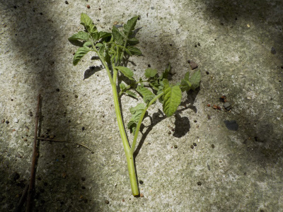
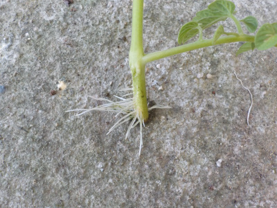
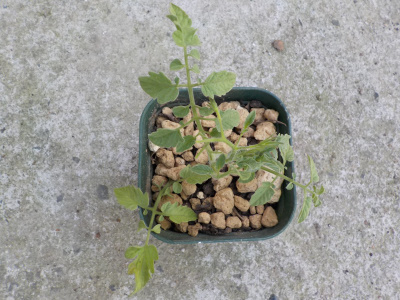
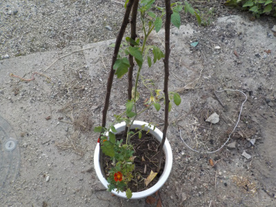
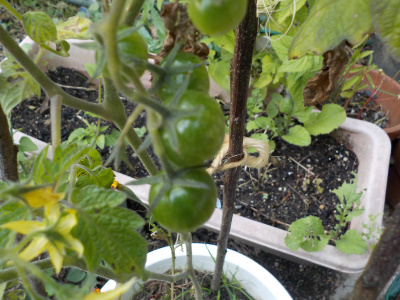
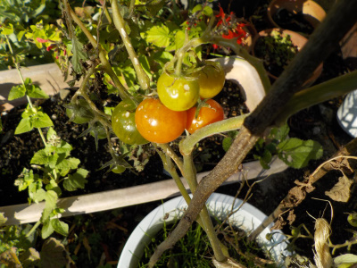
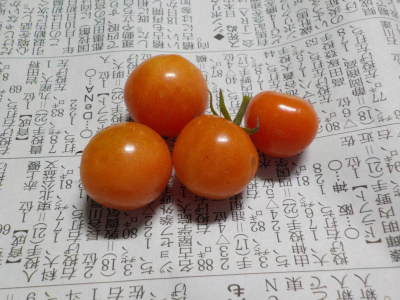

更新日 : 2021/07/25

今まで薄皮のミニトマトって柔らかすぎて好きじゃなかったんですが、急に好きになりました。
逆にアイコは硬くてちょっと苦手になりました。
薄皮トマトの脇芽を使って増やそうと思います。
でももう7月も終わり。トマトが実るまで成長するかな？
試しにやってみようと思います。鉢植えで過保護に育てたら出来るかな？
更新日 : 2021/07/31

水に漬けてたトマトの芽から根っこが出ました。

土に植え替えしました。
どれくらいのスピードで成長するでしょうね。1月で50センチ位の高さにならないかな。
更新日 : 2021/09/20

挿し木のトマトが大きくなったので、鉢を大きくしました。
マリーゴールドの苗が余っていたので一緒に植えました。ちょっと賑やかになっていい感じです。
寒くなるまでに実が食べれるかな？
更新日 : 2021/10/23

トマトに青い実が出来ています。
もうすぐ11月ですが、食べれるまで育つかなー？
ここまで育てたので、できたら食べたいです。
更新日 : 2021/11/28

11月末のトマトです。少し赤くなりましたね。
でもこの赤さだと食べる気がしません。もうちょっと放置しようと思います。
寒くなったので、先に枯れるかもしれません。
更新日 : 2021/12/05

真っ赤ではないですが、もうこれ以上赤くはならないと思うので食べることにしました。
味に期待はしていなかったんですが、意外と美味しかったです。
夏場より薄い味でしたが、ちゃんとトマト味でした。
12月まで育ててみて良かったです。
夏は味噌汁の代わりにトマトを食べます。（沢山あるので。）
【おいしいものを食べよう。】【たくさん寝よう。】
【ソロ活をしよう!】【季節感のあることをしよう。】【動画視聴はほどほどに。】【当サイトの全てのコンテンツは無断転載禁止です。】